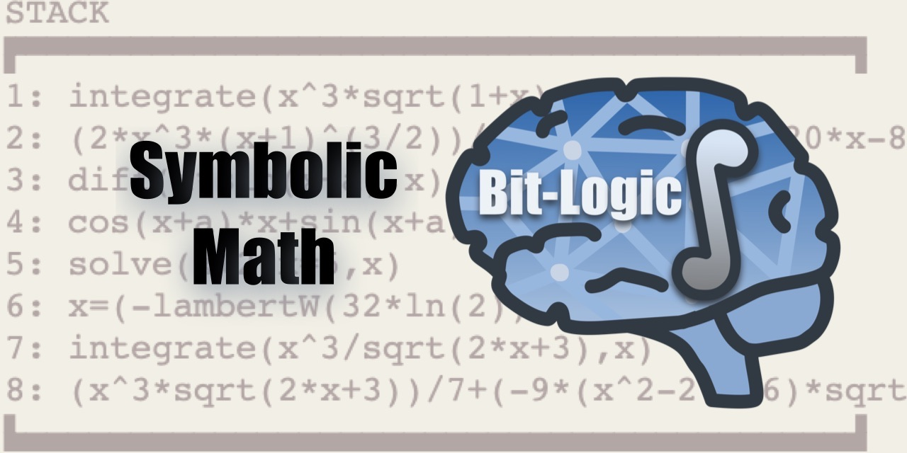
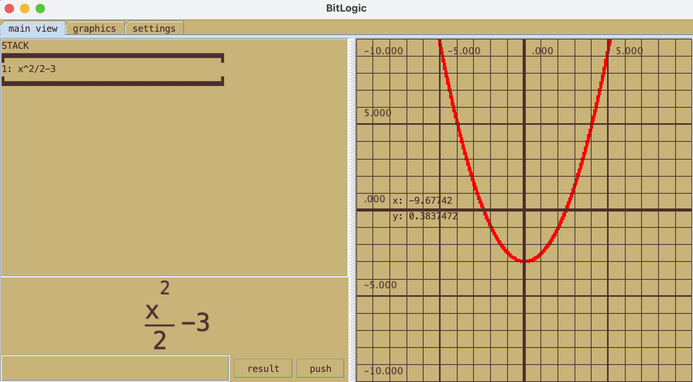
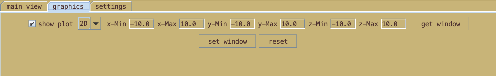

BitLogic Computer Algebra System

By Benjamin Currie
Getting Started
Download BitLogic version 1.5.5
youtube video
Starting the program
BitLogic.jar is the java executable which can be launched by double clicking it. It can also be opened with the following commands.
java -jar BitLogic.jar no-gui
java -jar BitLogic.jar gui
The program requires java at least version 11
Learning the interface
Once launched you should get a window

On the bottom left hand corner there is an entry area where you can add and remove items like a command line interface. The push button does the same thing as hitting enter and adds what you typed in the entry text field onto the stack. The result button computes the result of the last item on the stack.
The last item on the stack will also be rendered in pretty print as seen above. On the right is the graph. You can move around by dragging your mouse over the graph. Scrolling the mouse wheel will control the zoom. To get more precise window control, go to the graphics tab.

In the graphics tab there are many choices in how the plot will render. The get window button retrieves the current window zoom and loads it into the x-Min xMax... text fields. The set window loads the parameters in the text fields and sets the plot window to those values. The reset button changes it back to the default zoom level.
RPN (reverse polish notation)
Simple Example
Reverse polish notation is a way to enter and manipulate expressions on the stack. The best way to explain this is by example. Lets say you want to enter x^2/2. The first step is to create the x^2 expression. Type x then hit ENTER. This added x to the stack. Then type 2 and hit ENTER. This adds two to the stack. Now we want to combine them with the exponent operator so type ^ and hit ENTER. Notice how this created a new expression combining the two stack elements. Finally lets make it over two. So type 2 and hit ENTER. Then the division operator so type / and hit ENTER. You know have the proper expression. This might seem slow and complicated but it's actually very handy to combine things together.
Moving elements around
- 'undo' -- this changes the stack to the previous state. The undo size is only 1
- 'dup' -- this duplicates the last item on the stack
- 'dup:(element number)' -- duplicates a specific element
- 'roll' -- this moves the last element to the first element and shifts everything downwards
- 'swap' -- the swaps the last two elements of the stack
- 'swap:(element number)' -- swaps the last element and a specific element
- 'pop/r' -- removes the last element from the stack
- 'remove:(element number):' -- removes a specific element from the stack
- 'result/r' -- computes the result of the last element on the stack
- 'break' -- breaks apart the last element into its components
Operator commands
- '+' -- add last two elements
- '--' -- negate the last element on the stack
- '-' -- subtract last element from second to last element
- '*' -- multiply last two elements on the stack
- '^' -- second to last element to the power of the last element
- '/' -- second to last element divided by the last element
- '=' -- sets the last two elements equal to each other
- '[' -- add a empty list to the stack
- ']' -- add last element to the list. The list should be in the second to last position
- 'inv' -- take the inverse of the last element
Functions
- sin(angle) -- takes the sine
- cos(angle) -- takes the cosine
- tan(angle) -- takes the tangent
- asin(ratio) -- takes the inverse sine
- acos(ratio) -- takes the inverse cosine
- atan(slope) -- takes the inverse tangent
- ln(expr) -- takes the natural log
- sqrt(expr) -- takes the square root
- cbrt(expr) -- takes the cube root
- inv(expr) -- takes the reciprical
- diff(expr,variable) -- takes the derivative with respect to a variable
- integrate(expr,variable) -- takes the integral with respect to a variable (indefinite without +C)
- integrateOver(min,max,expr,variable) -- takes the integral over some domain (definite)
- factor(expr) -- factors the expression
- distr(expr) -- distributes the expression
extra simple functions
These functions work slightly differently internally but they appear like the other functions at the surface. You wont find java classes for these following functions.
- choose(n,k) -- given n elements choose k elements and returns number of configurations
- expand(expr) -- like distr except also expands powers entirly
- get(expr,index) -- gets a sub expression
- size(expr) -- gets the number of sub expressions